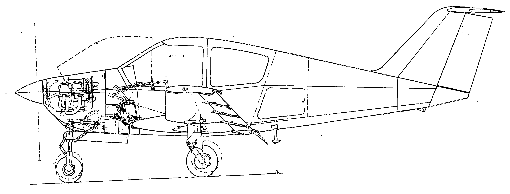

In 1979, I finished a step in the undergraduate curriculum which was mandatory in Delft at the time : a preliminary design of an aircraft. My assigment was a 200 hp, 4-seat tourer. The crux of these exercises was that the requirement was always a bit beyond the current state of the art.
In this case, all requirements ( take-off and landing distance over a 50 ft obstacle etc. ) were standard for aircraft in the class of the Piper Cherokee Arrow or the Mooney 201, but the cruise speed was about 10 mph higher, if I remember correctly. The side view shows the resulting design.

Four seat tourer in the Piper Arrow / Mooney 201 class ( 1979 ).
The design reference was the book by the design teacher, Torenbeek. His book was locally known as the "Torenbook". This handbook was geared towards airliners, not light aircraft, and the Imperial measurement system used throughout was a disaster. But apart from that it had good statistical data, based on sensible dimensional analysis, and as such it is still a good reference.
The only way to meet the requirements was to give the wing a lower wetted area by using a high wing loading. This necessitated an elaborate high-lift system for decent take-off and landing performance.
The internet was nowhere in sight at the time, so I had to glean tidbits of information from aviation magazines, combined with cycling visits to local airports. I decided to go for the new, thick GAW-1 airfoil with full span Fowler flaps and roll control by spoilers opening up the flap gap.
NASA was experimenting with this technology at the time in ATLIT, their "advanced technology light twin". I believe it had the unfortunate tendency of lowering the downgoing wing without lifting the other one, with the disconcerting side effect that an "aileron" input would cause height loss on approach.
Even with the full span Fowler flaps, I had to squeeze out every other bit of optimization. The one I was most uncomfortable with was shortening the tail, which just did not look right to me. This was a fine example of "rule cheating" or "designing to the test".
I did not believe Torenbeek's equation for the fuselage drag, but I had to make the grade. I did what I could to spice up the looks, and the side view shows what came out.
The design gained me the year's $ 500 prize for the best project report. Professor Dobbinga, who handed out the prize, joked that we all know that there are far easier ways to earn $ 500, like working as a supermarket cashier. How right he was...